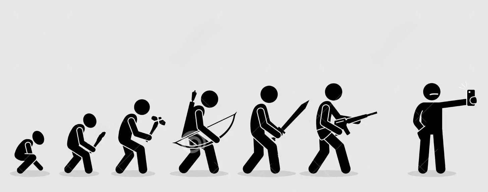
A lőfegyverek a 20. század eleje óta hatalmas fejlődésen mentek keresztül, az első világháború idején még a hagyományos puskák és géppuskák uralták a harctereket, napjainkban viszont már korszerű, könnyű és sokoldalú fegyvereket használnak. A fejlődés során nemcsak a fegyverek kialakítása változott meg, hanem a működésük, a pontosságuk és a katonai szerepük is.
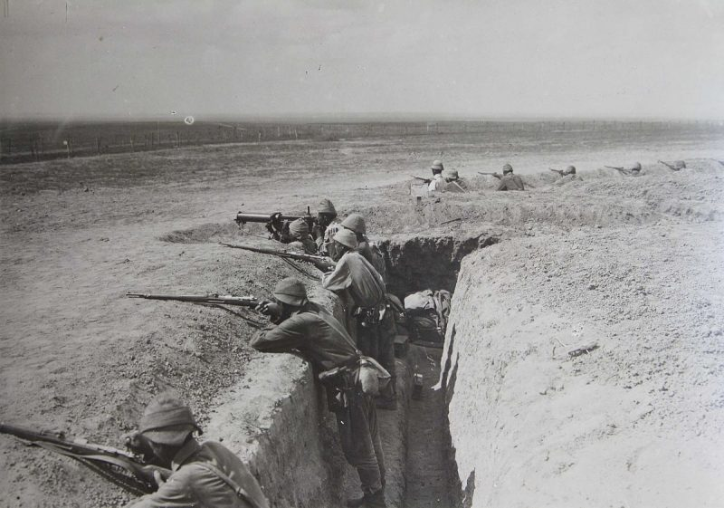
Az első világháborúban a gyalogság legfontosabb fegyverei a hosszú, ismétlőpuskák voltak. Ezeket minden lövés után kézzel kellett újratölteni, de megbízhatóak és viszonylag pontosak voltak. Ilyen fegyver volt például a brit Lee-Enfield
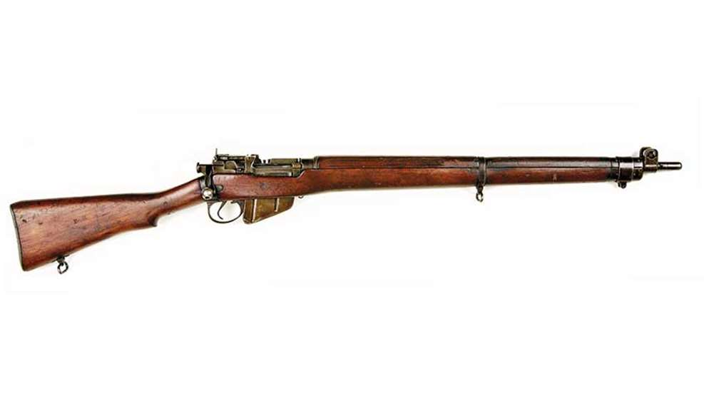 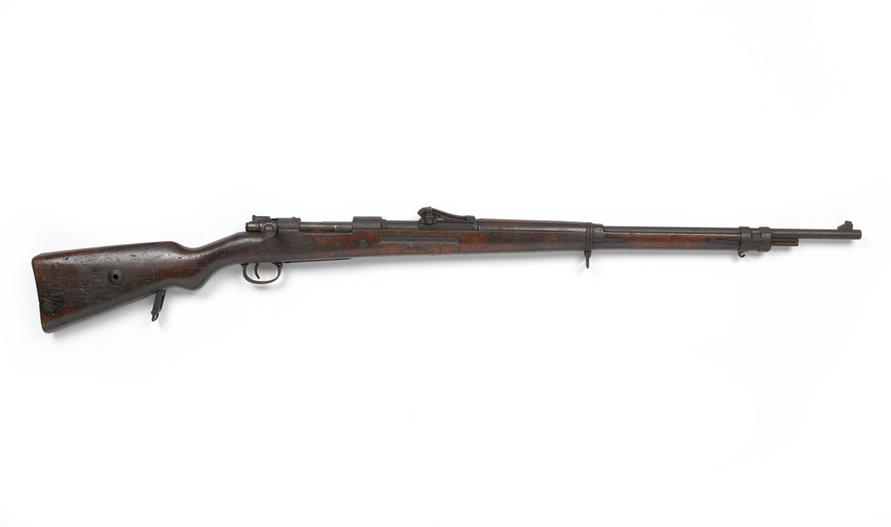
A géppuskák megjelenése alapjaiban változtatta meg a hadviselést. A nagy tűzgyorsaságú fegyverek hatalmas tűzerőt biztosítottak, és jelentősen megnehezítették a nyílt terepen végrehajtott támadásokat. A katonák ezért egyre gyakrabban harcoltak lövészárkokból.
A pisztolyok elsősorban tisztek, illetve bizonyos különleges feladatokat ellátó katonák személyi fegyverei voltak. A háború végére megjelentek az első géppisztolyok is, amelyek már sorozatlövésre is képesek voltak.
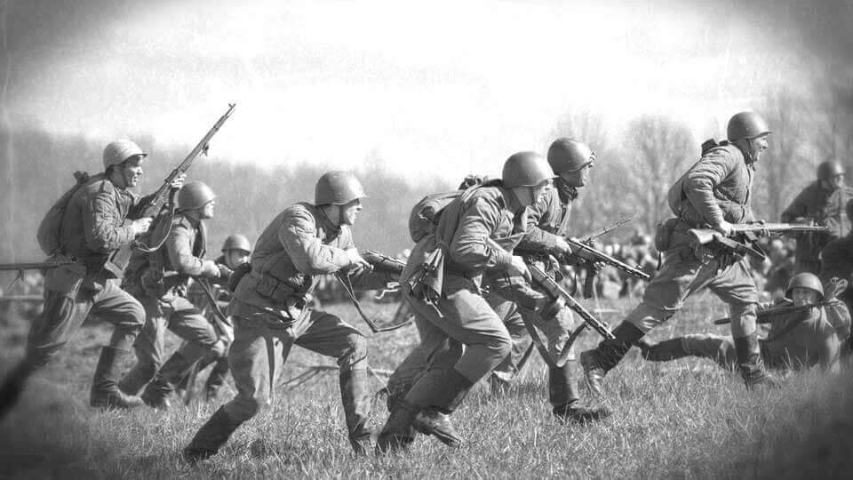
A második világháború idején a fegyverek egyre változatosabbá váltak. A hagyományos puskák mellett széles körben elterjedtek a géppisztolyok, amelyek különösen közelharcban és városi környezetben bizonyultak hasznosnak.
Az amerikai M1 Garand
 félautomata puska például minden lövés után automatikusan újratöltött, így a katonának nem kellett minden alkalommal kézzel működtetnie a zárat. Ez jelentősen növelte a tüzelés sebességét.
félautomata puska például minden lövés után automatikusan újratöltött, így a katonának nem kellett minden alkalommal kézzel működtetnie a zárat. Ez jelentősen növelte a tüzelés sebességét.
A német MP 40
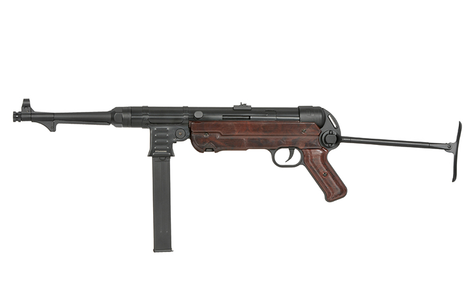 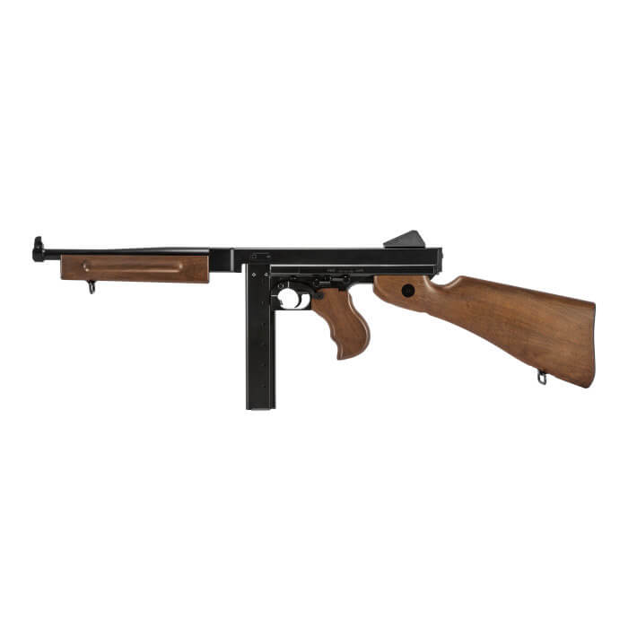 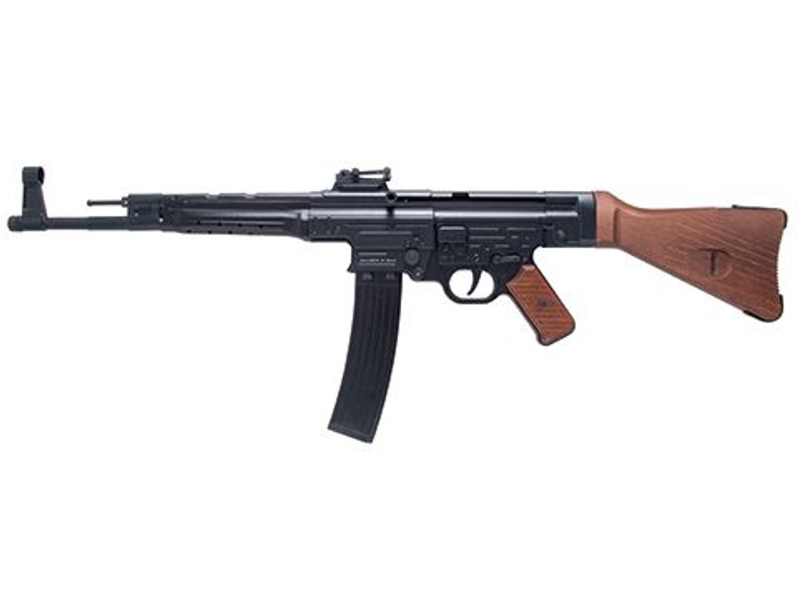
A második világháborút követően a katonai fejlesztések egyik legfontosabb célja a tűzerő, a kezelhetőség és a mozgékonyság összehangolása lett. A hosszú, nagy teljesítményű puskák mellett egyre nagyobb szerepet kaptak a kisebb tömegű, köztes lőszert használó gépkarabélyok.
Az 1940-es évek végén megjelent AK–47
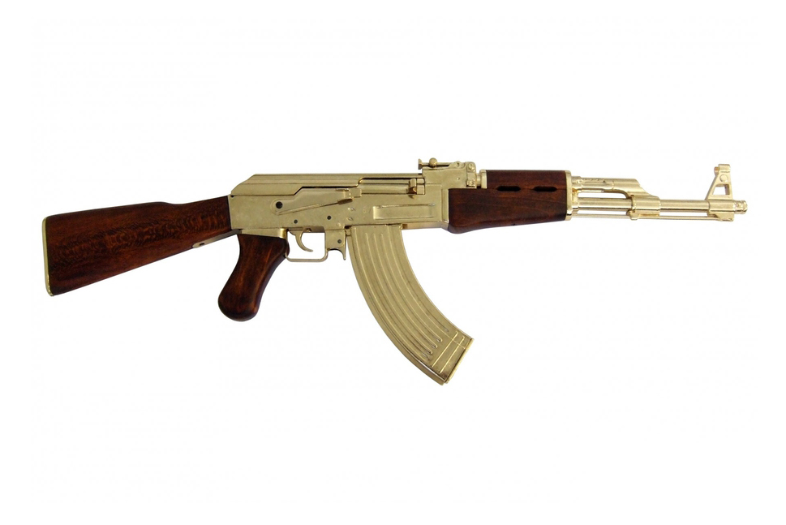
Az amerikai M16
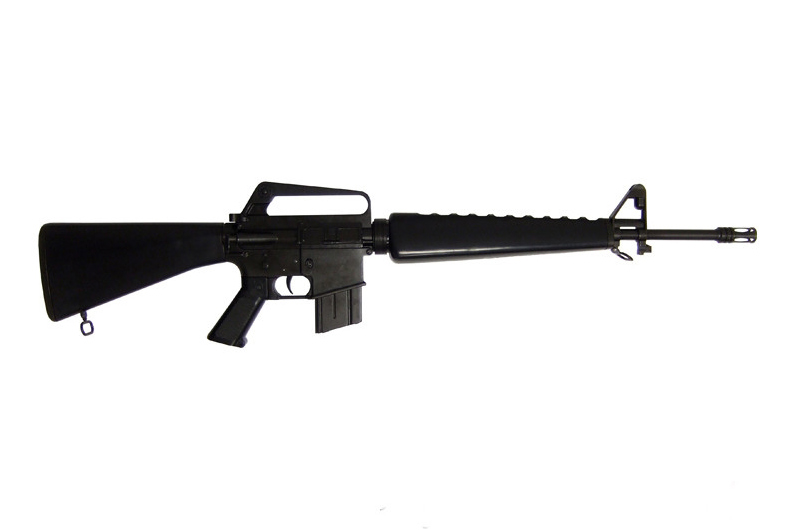 .
.
Ebben az időszakban fejlődtek jelentősen a mesterlövészpuskák, a könnyű géppuskák és a különleges feladatokra tervezett fegyverek is.
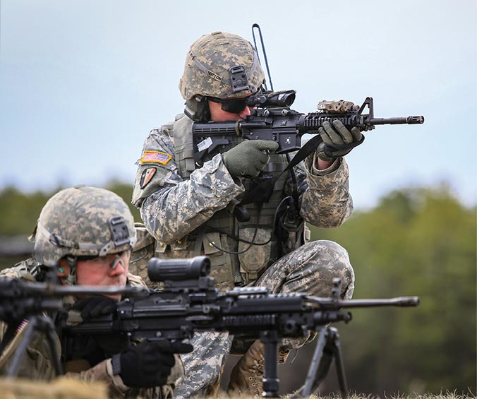
A modern lőfegyverek tervezésénél már nem kizárólag a tűzerő számít. Legalább ilyen fontos a kis tömeg, az ergonómia, a pontosság és a különböző kiegészítők használhatósága.
A mai gépkarabélyok jelentős része moduláris kialakítású, vagyis különféle irányzékokkal, lámpákkal, markolatokkal és más kiegészítőkkel szerelhető fel. Az optikai irányzékok és a korszerű anyagok szintén hozzájárulnak a fegyverek használhatóságához.
A HK416
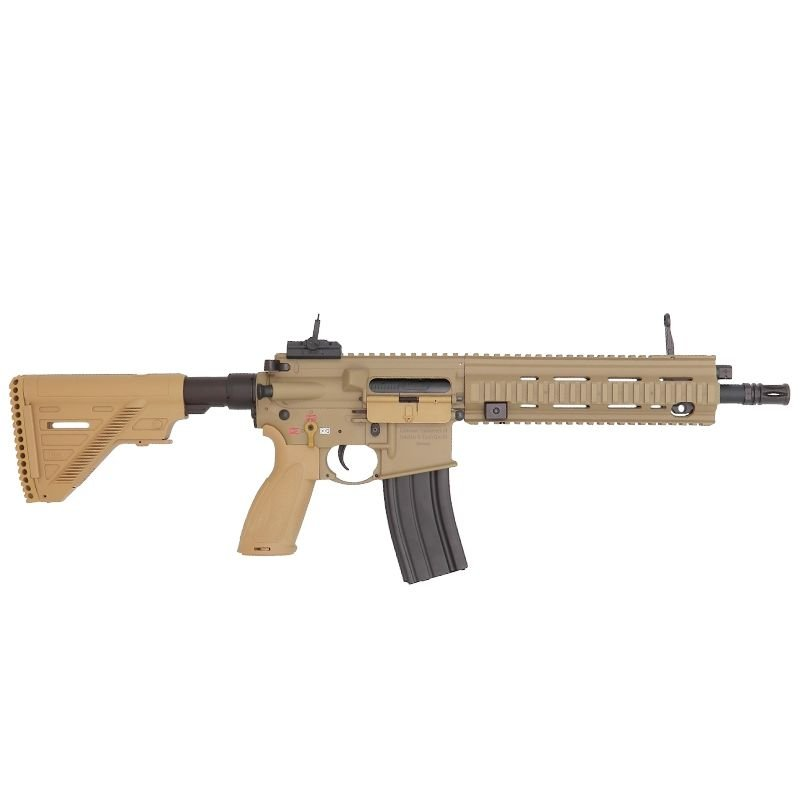 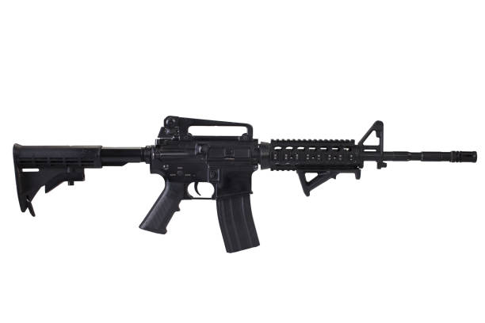 és az M4
és az M4
A technológia fejlődése a fegyverekhez kapcsolódó felszereléseket is átalakította: a digitális célzást segítő eszközök, a hőkamerák és az éjjellátók ma már számos katonai feladatban fontos szerepet töltenek be.

Az első világháború előtt is léteztek kézigránátok, de a tömeges alkalmazásuk a lövészárok-hadviseléssel vált igazán jelentőssé. A katonák gyakran olyan ellenséges állásokkal találkoztak, amelyeket közvetlenül megközelíteni veszélyes volt, ezért a gránátok fontos szerepet kaptak a közeli harcokban.
A háború során egyre több szabványosított típust vezettek be. A brit Mills-gránát
 például jellegzetes, bordázott testéről vált ismertté. A fejlesztések célja a megbízhatóbb működés és a tömeggyártás megkönnyítése volt.
például jellegzetes, bordázott testéről vált ismertté. A fejlesztések célja a megbízhatóbb működés és a tömeggyártás megkönnyítése volt.

A második világháborúban a kézigránátok a gyalogság általános felszerelésének részévé váltak. Az egyes országok eltérő kialakításokat alkalmaztak: a német M24
 -es nyeles gránát például a hosszú markolatáról, míg a brit Mills-gránát a kompakt, bordázott testéről volt felismerhető.
-es nyeles gránát például a hosszú markolatáról, míg a brit Mills-gránát a kompakt, bordázott testéről volt felismerhető.
A hagyományos robbanó- és repeszhatású változatok mellett különleges feladatokra szánt eszközök is elterjedtek. A füstgránátok a mozgás fedezésére és jelzésre, a villantógránátok pedig az ellenség ideiglenes megvakítására volt alkalmas. A gránátok így már nemcsak közvetlen támadóeszközként, hanem a katonai műveletek támogatására is alkalmasak voltak.

A hidegháború idején a gránátok fejlesztése egyre inkább a különböző harctéri feladatokhoz igazodott. A szovjet F-1
 -es repeszgránát és az amerikai M67
-es repeszgránát és az amerikai M67
 -es repeszgránát jól példázza a korszak jellegzetes kézigránátjait. Bár kialakításuk eltért, mindkettőt a gyalogság felszerelésének részeként alkalmazták.
-es repeszgránát jól példázza a korszak jellegzetes kézigránátjait. Bár kialakításuk eltért, mindkettőt a gyalogság felszerelésének részeként alkalmazták.
A hagyományos repeszgránátok mellett a füstgránátok is fontos szerepet kaptak. Ezeket a katonák a mozgásuk elfedésére, jelzésre és a harctéri tájékozódás támogatására használhatták. A korszakban tehát nem csupán a robbanóhatás, hanem a különböző taktikai feladatok kiszolgálása is meghatározta a gránátok fejlődését.

A modern korban a gránátok tovább specializálódtak. A német DM51
 -es kézigránát például repeszhatású eszközként ismert, míg az amerikai M18
-es kézigránát például repeszhatású eszközként ismert, míg az amerikai M18
 -as füstgránátot színes füst előállítására, többek között jelzésre és területek megjelölésére használják. Ezek jól mutatják, hogy a gránátok nem kizárólag támadóeszközök lehetnek.
-as füstgránátot színes füst előállítására, többek között jelzésre és területek megjelölésére használják. Ezek jól mutatják, hogy a gránátok nem kizárólag támadóeszközök lehetnek.
A modern katonai felszerelésben a hagyományos repeszgránátok mellett füst-, világító- és kábítógránátok is megtalálhatók. A fejlesztések középpontjában a megbízhatóság, a biztonságosabb kezelés és a meghatározott feladatokra való alkalmasság áll. Bár az alapelv sokat nem változott, a gránátok ma már a gyalogság sokoldalú eszköztárának részei.
A rakéták katonai alkalmazása jóval a 20. század előtt kezdődött. A korai változatokat főként egyszerű hajtóművük különböztette meg a hagyományos tüzérségi lövedékektől. Pontosságuk korlátozott volt, ezért elsősorban területi támadásokra és megfélemlítésre használták őket.
Az első világháború idején a hagyományos tüzérség továbbra is meghatározó szerepet játszott. A modern rakétatechnika jelentősebb fejlődése a két világháború között, majd a második világháború alatt gyorsult fel, amikor egyre nagyobb figyelmet kaptak a rakétahajtású fegyverek.

A második világháborúban a rakéták új szerepet kaptak a harctéren. A szovjet Katyusa sorozatvetők rövid idő alatt nagy mennyiségű rakétát tudtak kilőni, így jelentős tűzerőt biztosítottak a szárazföldi csapatoknak. A rakétatüzérség gyorsan a hagyományos tüzérséget kiegészítő fontos eszközzé vált.
Ezzel párhuzamosan Németországban kifejlesztették a V–2
 ballisztikus rakétát. Ez a fegyver a nagy hatótávolságú rakétatechnika egyik meghatározó állomása volt. Bár pontossága korlátozott maradt, fejlesztése fontos tapasztalatokat adott a későbbi rakétaprogramok számára.
ballisztikus rakétát. Ez a fegyver a nagy hatótávolságú rakétatechnika egyik meghatározó állomása volt. Bár pontossága korlátozott maradt, fejlesztése fontos tapasztalatokat adott a későbbi rakétaprogramok számára.

A második világháborút követően az Egyesült Államok és a Szovjetunió hatalmas erőforrásokat fordított a rakétatechnológia fejlesztésére. A rakéták egyre nagyobb hatótávolságra jutottak, miközben fejlődött az irányításuk és a célba juttatásuk pontossága.
A hidegháború során megjelentek a ballisztikus rakéták különböző típusai, a légvédelmi rakétarendszerek és a páncéltörő irányított rakéták is. A technológia a nukleáris elrettentésben szintén központi szerepet kapott, így a rakéták nemcsak a harctéri fegyverek, hanem a nagyhatalmi stratégia fontos elemeivé váltak.

A modern rakétarendszerek fejlett navigációs és irányítási megoldásokat alkalmaznak, amelyek jelentősen növelik a pontosságot. A hagyományos sorozatvetők mellett ma már olyan rendszerek is elterjedtek, amelyek irányított rakétákkal képesek meghatározott célpontokat támadni.
A rakéták felhasználási területe rendkívül széles: a légvédelmi rendszerektől a harctéri tüzérségen át a nagy hatótávolságú stratégiai fegyverekig terjed. A fejlődés fő irányát a pontosság, a hatótávolság és a különböző védelmi rendszerekkel szembeni hatékonyság növelése jelenti.

A pilóta nélküli repülőgépek fejlesztése már a 20. század első felében megkezdődött. A korai eszközök technológiája még kezdetleges volt, irányításuk pedig jóval korlátozottabb lehetőségeket kínált, mint a mai drónok. Elsősorban kísérleti célokra, illetve légvédelmi gyakorló célpontként használták őket.
A második világháború során a pilóta nélküli technológia katonai jelentősége tovább nőtt. A korabeli fejlesztések még nem tették lehetővé a mai értelemben vett autonóm működést, de megalapozták a későbbi rendszerek kialakítását.

A hidegháborúban a drónok egyik legfontosabb feladata a felderítés lett. A pilóta nélküli repülőgépek segítségével olyan területekről is információkat lehetett gyűjteni, amelyek megközelítése emberes repülőgépekkel kockázatosnak bizonyult.
A kamerák, az adatátviteli rendszerek és a navigáció fejlődésével a drónok egyre hasznosabbá váltak a katonai vezetés számára. A megszerzett felvételek segítették az ellenséges csapatmozgások megfigyelését és a katonai helyzet értékelését.

A 20. század végén és a 21. század elején a digitális elektronika, a műholdas navigáció és a fejlett kommunikációs rendszerek jelentősen felgyorsították a drónok fejlődését. Megjelentek a hosszú ideig a levegőben maradó katonai repülőgépek, amelyek már nemcsak megfigyelésre, hanem egyes esetekben fegyverek hordozására is alkalmasak voltak.
Ezzel párhuzamosan a kisebb drónok is egyre elterjedtebbé váltak. Az egyszerűbb eszközök alacsonyabb költségük és könnyű hordozhatóságuk miatt olyan katonai egységek számára is elérhetővé tették a légi megfigyelést, amelyek korábban nem rendelkeztek hasonló képességekkel.

Napjainkban a drónok a modern hadviselés meghatározó eszközei. A kis méretű, kereskedelmi alapokra épülő eszközöktől a nagy hatótávolságú katonai repülőgépekig számos típus létezik. Felderítésre, megfigyelésre, célfelderítésre és támadó feladatokra egyaránt alkalmazzák őket.
A drónok elterjedése új kihívásokat is teremtett. A hagyományos légvédelmi rendszerek mellett egyre nagyobb jelentőséget kaptak az elektronikai zavaróeszközök, a drónelhárító rendszerek és az ellenséges pilóta nélküli eszközök felderítésére szolgáló technológiák. A drónok fejlődése jól mutatja, hogy a modern hadviselésben a viszonylag olcsó, kis méretű technológia is jelentős stratégiai hatással bírhat.